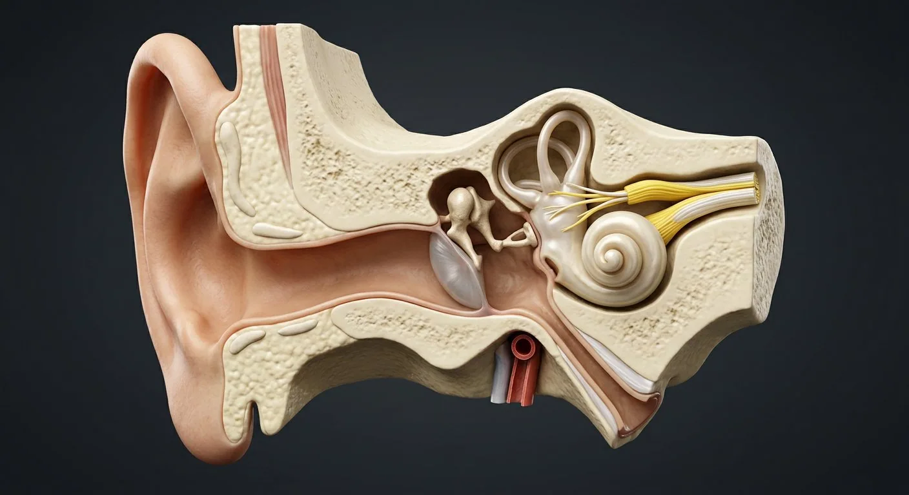

ORGAN → UNDER THE LENS
Cochlear hair-cell organ
Tap to compare the organ region with a tissue-level teaching illustration.
Read about Organ of Corti ↓A pressure-wave collector that turns vibration into nerve impulses and doubles as a gyroscope.

Sound waves are funnelled by the auricle down the external canal to the tympanic membrane. The membrane vibrates the ossicular chain — malleus, incus and stapes, the three smallest bones in the body — which amplifies pressure about 22-fold as it transfers vibration from a large eardrum to the tiny oval window. In the fluid-filled cochlea, the travelling wave bends hair cells on the basilar membrane: high frequencies at the base, low at the apex. Beside it, the vestibule and three semicircular canals sense gravity and angular acceleration for balance.
These are educational cutaways, not literal magnifications of an organ pixel or laboratory slides. A ring marks the approximate tissue region; part-specific lines appear only where identifiable.
Tap to compare the organ region with a tissue-level teaching illustration.
Read about Organ of Corti ↓These 12 structures describe anatomy related to the chapter’s regional illustration. Each entry separates location, function and a clinical point.
A cartilaginous scoop: helix, antihelix, tragus, antitragus, concha and lobule.
What it doesCollects sound and helps localise it, especially vertically.
Clinical connectionIts skin is a classic site for gouty tophi and for sun-related skin cancer.
A 2.5 cm S-shaped canal, cartilaginous outer third and bony inner two-thirds, lined by skin with ceruminous glands.
What it doesConducts sound to the eardrum; cerumen traps dust and insects.
Clinical connectionImpacted wax and otitis externa (swimmer's ear) both cause conductive hearing loss and pain on pulling the pinna.
A 9 × 10 mm cone of three layers, tilted so its umbo points medially; pars tensa below, pars flaccida above.
What it doesConverts sound pressure into mechanical vibration of the malleus.
Clinical connectionA red bulging drum means otitis media; a pearly white mass behind it suggests cholesteatoma.
The hammer: handle embedded in the eardrum, head articulating with the incus.
What it doesFirst lever of the ossicular chain.
Clinical connectionIts handle is what you see as the cone-of-light landmark on otoscopy.
The anvil, bridging malleus and stapes.
What it doesSecond lever; its long process is the most fragile part of the chain.
Clinical connectionIncudostapedial joint disruption is a common cause of conductive loss after head injury.
The stirrup: the smallest bone in the body (~3 mm), its footplate closing the oval window.
What it doesDelivers amplified vibration into the cochlear fluid.
Clinical connectionOtosclerosis fixes the footplate and causes conductive deafness, classically in young women; stapedotomy restores hearing.
An air-filled cleft in the temporal bone containing the ossicles, two muscles (tensor tympani, stapedius) and the chorda tympani.
What it doesImpedance matching between air and cochlear fluid.
Clinical connectionThe stapedius reflex dampens loud sound; its paralysis causes hyperacusis in facial nerve palsy.
A 3.5 cm tube to the nasopharynx, normally closed and opened by swallowing.
What it doesEqualises middle-ear pressure and drains mucus.
Clinical connectionIn children it is short and horizontal, which is why middle-ear infections follow colds so often.
A 2.5-turn spiral containing the scala vestibuli, scala media and scala tympani, with the organ of Corti on the basilar membrane.
What it doesFrequency analysis: base responds to high pitch, apex to low; hair cells release glutamate onto the cochlear nerve.
Clinical connectionOuter hair cells are killed by noise and aminoglycosides, causing sensorineural deafness. Cochlear implants bypass them.
Two otolith organs whose hair cells carry crystals of calcium carbonate.
What it doesSense linear acceleration and head tilt — gravity sensing.
Clinical connectionDislodged otoliths drifting into a semicircular canal cause BPPV, the commonest cause of positional vertigo.
Three fluid-filled loops at right angles (horizontal, anterior, posterior), each with an ampulla containing a cupula.
What it doesDetect angular acceleration of the head in three planes.
Clinical connectionTheir mismatched input with vision and proprioception is what produces motion sickness and vertigo.
Cochlear and vestibular divisions joining at the internal acoustic meatus, entering the brainstem at the cerebellopontine angle.
What it doesCarries hearing and balance information to the cochlear and vestibular nuclei.
Clinical connectionA vestibular schwannoma at the cerebellopontine angle causes unilateral sensorineural loss, tinnitus and unsteadiness.
These 10 additional entries give anatomical context. They are deliberately not assigned a photographic pin on the regional image.
Fibrocartilaginous ring anchoring the peripheral tympanic membrane in its sulcus.
What it doesFixes the membrane while its central portion vibrates.
Clinical connectionPosterior-superior quadrant requires care during ear procedures.
Small slack superior portion of the tympanic membrane above the malleolar folds.
What it doesMoves differently from the taut pars tensa.
Clinical connectionRetraction pockets here can precede cholesteatoma.
Large tense fibrous part of the tympanic membrane attached to the malleus handle.
What it doesTransmits sound vibration to the ossicles.
Clinical connectionPerforation can impair conductive hearing.
Membrane-covered opening between stapes footplate and scala vestibuli.
What it doesTransmits ossicular motion into cochlear fluid.
Clinical connectionStapes fixation can cause conductive hearing loss.
Flexible membrane at the basal cochlear scala tympani.
What it doesAllows pressure displacement as the stapes drives cochlear fluid.
Clinical connectionIts position matters in cochlear surgery.
Sensory epithelium on basilar membrane containing inner and outer hair cells.
What it doesTransduces basilar-membrane motion into auditory nerve signals.
Clinical connectionHair-cell damage causes sensorineural hearing loss.
Graded elastic membrane separating scala media from scala tympani.
What it doesSupports frequency-dependent cochlear vibration.
Clinical connectionBasal region responds strongly to high frequencies.
Specialized vascular epithelium on lateral wall of cochlear duct.
What it doesMaintains potassium-rich endolymph and its electrical potential.
Clinical connectionDisruption compromises hair-cell transduction.
Otolith-bearing sensory patch in utricle oriented mainly for horizontal acceleration.
What it doesDetects linear head acceleration and gravity component.
Clinical connectionVestibular dysfunction can cause imbalance.
Hair-cell sensory ridge in each semicircular-duct ampulla beneath cupula.
What it doesDetects angular head acceleration.
Clinical connectionTesting canal function helps localize vestibular disease.
Short answers grounded in the structures described above. Use the illustrated guide for anatomical context.
The outer ear collects sound, the eardrum and three middle-ear bones transmit vibration, and the cochlea in the inner ear converts movement into nerve signals.
The vestibular organs of the inner ear, including the semicircular canals and otolith organs, detect head rotation and linear movement.
A 9 × 10 mm cone of three layers, tilted so its umbo points medially; pars tensa below, pars flaccida above. Function: Converts sound pressure into mechanical vibration of the malleus.
The stirrup: the smallest bone in the body (~3 mm), its footplate closing the oval window. Function: Delivers amplified vibration into the cochlear fluid.
Function: Sense linear acceleration and head tilt — gravity sensing. Two otolith organs whose hair cells carry crystals of calcium carbonate.
Follow these connected structures and body systems in the illustrated atlas.
 EyeSagittal section: an optical instrument that focuses light onto a neural film.↗
EyeSagittal section: an optical instrument that focuses light onto a neural film.↗ BrainMidsagittal section: cerebrum, diencephalon, brainstem and cerebellum around the ventricular system.↗
BrainMidsagittal section: cerebrum, diencephalon, brainstem and cerebellum around the ventricular system.↗ SkinA layered barrier with hair, glands, receptors and its own immune system.↗
SkinA layered barrier with hair, glands, receptors and its own immune system.↗ Spinal cordCross-section: a grey butterfly inside white tracts, wrapped in three meninges.↗
Spinal cordCross-section: a grey butterfly inside white tracts, wrapped in three meninges.↗General anatomy references and related source chapters for continued study. These links do not make the digital illustrations clinical images or certify every anatomical variant.
This educational page is not medical advice and has not undergone formal clinical peer review. Spotted an error? Contact the editor.
Open the realistic interactive plate, label lines, focus view and self-test.